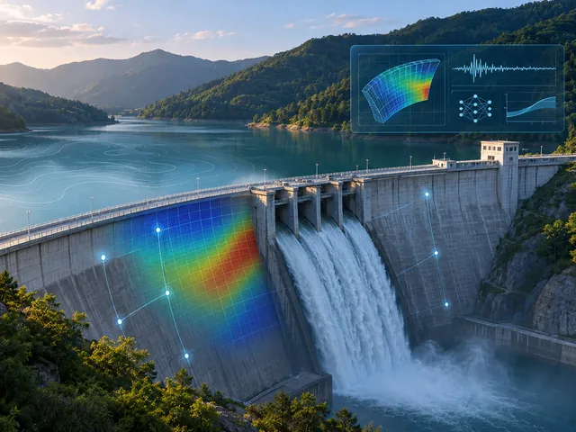
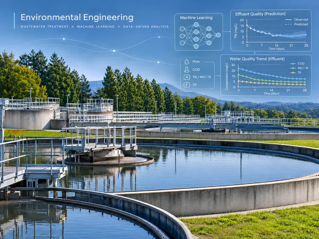
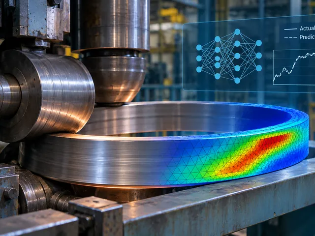

Dam behaviour modelling and safety monitoring
Machine learning models for behaviour prediction, monitoring data interpretation, anomaly detection and dam safety assessment.
We develop numerical, data-driven and hybrid modelling approaches to analyse dam behaviour, improve structural and hydraulic performance, and support dam safety assessment.

Machine learning models for behaviour prediction, monitoring data interpretation, anomaly detection and dam safety assessment.
Numerical simulation of concrete dams during construction and operation, including thermal and mechanical processes.
Numerical analysis of spillways, bottom outlets, stilling basins and other hydraulic structures using FEM, CFD, PFEM and DEM.
Integration of numerical simulations and monitoring data, uncertainty analysis, ML surrogate models and risk assessment.
We apply numerical modelling, machine learning and artificial intelligence to understand, predict and improve environmental and water-related processes.

Machine learning for water quality assessment, prediction of pollutant removal and optimization of advanced wastewater treatment processes.
Data-driven approaches to predict atmospheric pollutant concentrations and support environmental monitoring.
Numerical and hybrid models for streamflow prediction, water distribution network simulation and leakage analysis.
We combine computational modelling and machine learning to analyse, simulate and optimize industrial processes and engineering systems.

Numerical simulation, digital twins and machine learning for optimization of manufacturing processes, including metal forming.
Integration of numerical simulations, particularly DEM, and machine learning surrogate models for material parameter identification and calibration.
Discrete element modelling of granular materials and railway ballast behaviour.